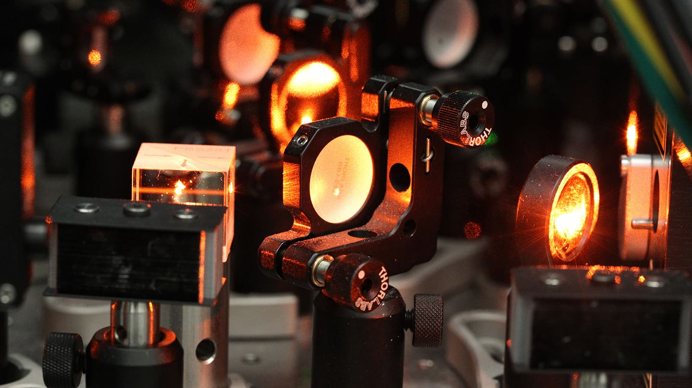

Internship / Quantum hardware
Logiqal
A summer working on the hardware and software behind neutral-atom quantum computing.

The internship
I spent summer 2026 at Logiqal as a Quantum Hardware Intern. My work was on the software around the experiments: connecting instruments, calibrating optical waveforms, getting data off FPGAs, and keeping track of what was happening in the lab.
Visit Logiqal ↗Connecting the lab
One of my main projects was a distributed NATS pub-sub network supporting more than 40 different instruments. I developed production device drivers, calibration services, and remote device management for the neutral-atom experiments.
The work covered both the individual devices and how they communicated across the network, so the drivers and services could be used together in an experiment.
AOM calibration
I also developed a calibration pipeline for fiber-coupled acousto-optic modulators (AOMs). The goal was to get the optical output to match the requested waveform. I used complex-covariance demodulation and closed-loop pre-distortion, achieving less than 1% shape error in under 0.2 ms.
The basic idea is to measure the output, compare it with the target, and adjust the drive waveform to compensate for the difference.
Calibration loop
-
01Target waveform
The optical pulse we want
-
02RF drive pulse
Generate the pulse that drives the AOM
-
03Fiber-coupled AOM
Shape the optical pulse
-
04Measure & compare
Demodulate the output and estimate the error
-
05Apply correction
Pre-distort the RF drive pulse to compensate for the error
Repeat steps 02–05 with the corrected RF drive pulse.
FPGA acquisition
On the acquisition side, I redesigned a Solarflare
ef_vi kernel-bypass receive path for FPGA waveform
data. I separated control traffic and jumbo-frame traffic into
optimized RX queues, which increased throughput by 18×.
Lab telemetry
I designed a PostgreSQL/TimescaleDB backend for continuous laboratory monitoring. This included the hypertable schemas and compression and retention policies, so Grafana could query the data quickly over long time horizons.
Tools
NATS · Solarflare ef_vi · FPGA waveform acquisition · PostgreSQL · TimescaleDB · Grafana · Fiber-optic hardware
Image credits
The laser photograph is by Frank Wojciechowski and appears in Princeton Engineering’s “Illuminating errors creates a new paradigm for quantum computing” (October 11, 2023). It shows the Princeton research setup, rather than the equipment from my internship.
The Logiqal logo is from Logiqal’s official website. The calibration diagram is an original illustration for this page.